Clues
The three knocks (from the street) clue_knocks_distant
Knock, knock… knock: hollow wooden knocks inside the blue house, muffled by the wall, with a little echo off the neighbouring houses.
In the game: Arrival clue: raises 'Where are the knocks coming from?'. Mono, so the game places it at the house (direction and distance come from the 3D position).
Listen for: Are all three knocks distinct on the phone speaker, with the pause before the last? Does it sound like it is inside a house, not in your ear, and still friendly rather than scary?
Takes: 1 2 3 4 Play all
1.83–1.92 s -20.0 to -20.0 LUFS (target -20) peak ≤ -1.3 dBTP clue limiter up to 3.1 dB sync points 0.02, 0.28, 1.00 s all checks passed
Spectrogram (take 1) 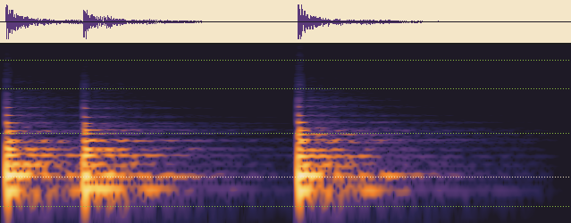
Floor hum and knocks (inside the hall) clue_floor_hum
The floor starts to hum and tremble, three knocks thump up through the boards with a rattle of dust, then the hum fades.
In the game: Hall clue: becomes the floor-hum sticker; the knocks are under the floor.
Listen for: Can you hear the hum on the phone (it is built from overtones, the speaker has no deep bass)? Do the knocks feel under your feet rather than on a door?
Takes: 1 2 3 Play all
4.20 s -19.0 to -19.0 LUFS (target -19) peak ≤ -1.3 dBTP clue limiter up to 2.6 dB sync points 1.10, 1.36, 2.08 s all checks passed
Spectrogram (take 1) 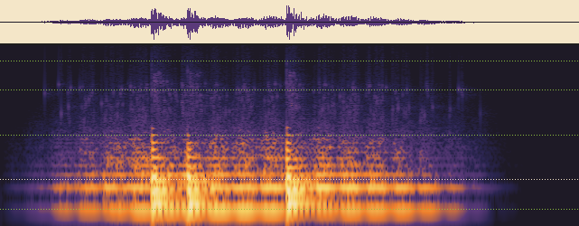
Cam tap (workshop, close up) clue_cam_tap
A hard little wooden 'tok': the cam lobe tapping its follower, with a tiny settle.
In the game: Workshop: the machine's knock source seen and heard close up; plays on each cam contact.
Listen for: Does it read as the same family as the knocks, only closer and harder?
Takes: 1 2 3 4 5 Play all
0.32–0.35 s -21.0 to -21.0 LUFS (target -21) peak ≤ -1.2 dBTP clue limiter up to 3.6 dB all checks passed
Spectrogram (take 1) 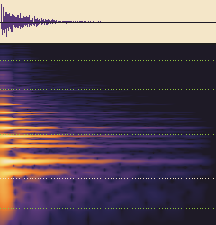
Wind wheel whirr (rooftop) clue_wind_wheel
The little rooftop wheel spins up, whirrs and slows, with a soft axle creak.
In the game: Bonus clue seen from the treehouse deck: it whirs before each knock cycle.
Listen for: Whirr, not buzz? It should sound wooden and breezy.
Takes: 1 2 3 Play all
3.20 s -18.0 to -18.0 LUFS (target -18) peak ≤ -1.4 dBTP clue all checks passed
Spectrogram (take 1) 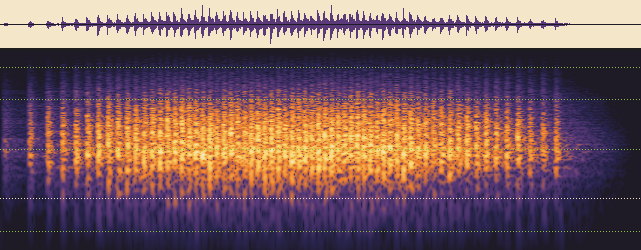
Pip moving
Footsteps on wood step_wood
Pip's light heel-and-toe on porch planks; one take has a tiny creak.
In the game: Porch, treehouse and the house interior floors.
Listen for: In the walk preview: do steps vary enough not to sound like a machine gun? Light, a child?
Takes: 1 2 3 4 5 Play all
In context: a walk across this surface (the takes mixed in turn)
0.22–0.25 s -25.0 to -25.0 LUFS (target -25) peak ≤ -5.3 dBTP footstep all checks passed
Spectrogram (take 1) 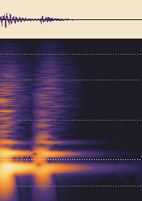
Footsteps on grass step_grass
Soft brushy lawn steps with a gentle earth thud.
In the game: Yards and verges.
Listen for: Grass, or does it sound like paper? Too hissy on the phone?
Takes: 1 2 3 4 5 Play all
In context: a walk across this surface (the takes mixed in turn)
0.19–0.23 s -25.0 to -25.0 LUFS (target -25) peak ≤ -10.6 dBTP footstep all checks passed
Spectrogram (take 1) 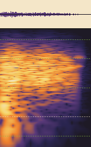
Footsteps on stone step_stone
Crisp, small soft-sole ticks on paving with a little grit.
In the game: Sidewalk, plaza and the porch steps.
Listen for: Soft costume shoes, not high heels or tap shoes?
Takes: 1 2 3 4 5 Play all
In context: a walk across this surface (the takes mixed in turn)
0.14–0.19 s -25.0 to -25.0 LUFS (target -25) peak ≤ -6.4 dBTP footstep all checks passed
Spectrogram (take 1) 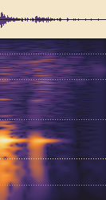
Jump move_jump
A soft push-off and the cape whooshing up with a couple of flaps.
In the game: Every jump; layered with the high-jump boost later.
Listen for: Light and springy, not a sword swish?
Takes: 1 2 3 4 Play all
0.32 s -22.0 to -22.0 LUFS (target -22) peak ≤ -5.5 dBTP movement all checks passed
Spectrogram (take 1) 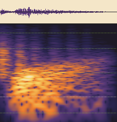
Land move_land
A light thud, two quick soles, one cape flutter and a puff of dust.
In the game: Every landing (spec §5: soft footfall, one flutter of the cape).
Listen for: Soft and friendly, no 'ouch' feeling?
Takes: 1 2 3 4 Play all
0.38–0.38 s -22.1 to -22.0 LUFS (target -22) peak ≤ -1.3 dBTP movement limiter up to 1.3 dB all checks passed
Spectrogram (take 1) 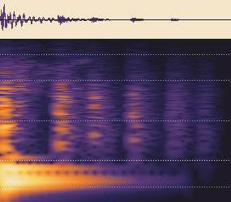
Glide: cape opens move_glide_open
'Fwup': the bat cape spreads, then flutters in the air and folds.
In the game: Start of the bat-cape glide, Pip's signature move.
Listen for: Does it sound like fabric wings? Is the flutter pleasant rather than a motor?
Takes: 1 2 3 Play all
1.40 s -22.0 to -22.0 LUFS (target -22) peak ≤ -1.2 dBTP movement limiter up to 0.8 dB all checks passed
Spectrogram (take 1) 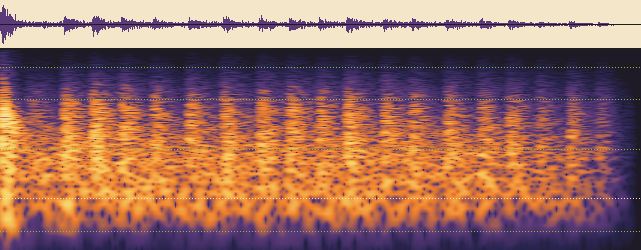
Glide: flutter loop move_glide_loop
A seamless two-second flutter that repeats while the glide lasts.
In the game: Held glide (loops under the opening sound).
Listen for: With the player looping: can you hear the seam or a repeating pattern?
Takes: 1 2 3 Play all
2.00 s -22.0 to -22.0 LUFS (target -22) peak ≤ -4.8 dBTP movement all checks passed
Spectrogram (take 1) 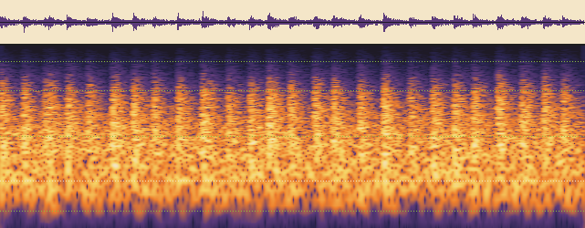
Notebook and UI
Page turn (threshold) ui_page_turn
A big paper page lifting, sweeping over and landing with a soft flap.
In the game: The 0.5 s paper page-turn transition at the house thresholds (D24.1); also the notebook page flip.
Listen for: Paper, not wind or a shaker? Does it fit a half-second transition?
Takes: 1 2 3 4 Play all
0.78 s -21.0 to -21.0 LUFS (target -21) peak ≤ -6.6 dBTP notebook all checks passed
Spectrogram (take 1) 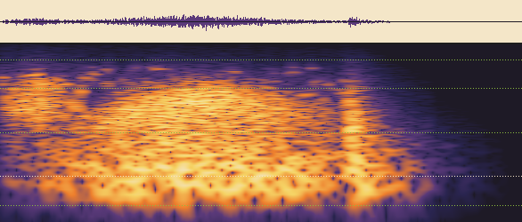
Sticker: pick up note_sticker_pick
A sticker peeling off its backing: rising crackle and a small 'tk'.
In the game: Lifting a clue sticker from the tray (mystery-first §5).
Listen for: Satisfying peel? Not scratchy or harsh on the phone?
Takes: 1 2 3 4 Play all
0.31–0.34 s -21.0 to -21.0 LUFS (target -21) peak ≤ -6.3 dBTP notebook all checks passed
Spectrogram (take 1) 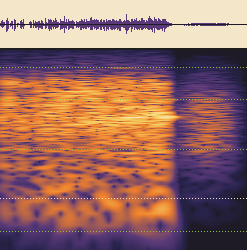
Sticker: press in note_sticker_drop
A soft felt pat with a small wooden 'tuk' and the glue gripping.
In the game: Placing a sticker on a question slot.
Listen for: Does it feel like pressing something down, tactile and cosy?
Takes: 1 2 3 4 Play all
0.13–0.15 s -21.0 to -21.0 LUFS (target -21) peak ≤ -1.7 dBTP notebook all checks passed
Spectrogram (take 1) 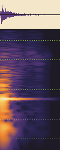
Sticker: wobble back note_sticker_wobble
A friendly rubbery 'boing-oing' and a soft 'tok' as the sticker hops home.
In the game: A wrong set: gentle, never a failure buzzer (D26).
Listen for: Playful 'try again', not 'wrong!'? Would a 6-year-old smile?
Takes: 1 2 3 Play all
0.75 s -21.0 to -21.0 LUFS (target -21) peak ≤ -1.9 dBTP notebook all checks passed
Spectrogram (take 1) 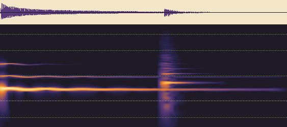
Correct: glow note_correct_glow
A warm rising celesta arpeggio that blooms into a soft glow with sparkles.
In the game: A right placement: the answer appears (no fanfare, a warm reward).
Listen for: Warm and magical, not a slot-machine win? Not too long?
Takes: 1 2 3 Play all
2.12–2.22 s -21.0 to -21.0 LUFS (target -21) peak ≤ -7.1 dBTP notebook all checks passed
Spectrogram (take 1) 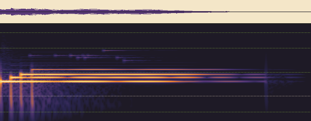
UI tap ui_tap
A short, soft wooden 'tup' of a felt button.
In the game: Every button and control (spec §6: sound on every control).
Listen for: Pleasant after 100 taps? Too clicky or too dull?
Takes: 1 2 3 4 5 Play all
0.12 s -24.0 to -24.0 LUFS (target -24) peak ≤ -5.5 dBTP ui all checks passed
Spectrogram (take 1) 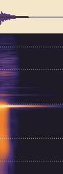
Voices
Babble: Pip voice_pip
The curious new kid: a bright child voice, medium pace, questions that rise.
In the game: Non-verbal babble under the caption when the character speaks (D20, D23.1). Each take is a different line.
Listen for: Does it sound like this character? Cute and kind, never creepy or robotic? Too buzzy?
Takes: 1 2 3 Play all
2.34–2.70 s -19.0 to -19.0 LUFS (target -19) peak ≤ -2.9 dBTP voice all checks passed
Spectrogram (take 1) 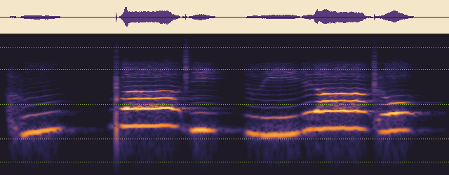
Babble: Bea voice_bea
Fast and sure: higher, quicker, bouncier.
In the game: Non-verbal babble under the caption when the character speaks (D20, D23.1). Each take is a different line.
Listen for: Does it sound like this character? Cute and kind, never creepy or robotic? Too buzzy?
Takes: 1 2 3 Play all
2.00–2.40 s -19.0 to -19.0 LUFS (target -19) peak ≤ -2.1 dBTP voice all checks passed
Spectrogram (take 1) 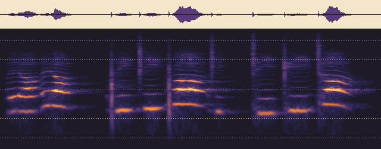
Babble: Mr. Vale voice_vale
Slow and dry: a kind old man, narrow melody, a gentle creak at the end of a thought.
In the game: Non-verbal babble under the caption when the character speaks (D20, D23.1). Each take is a different line.
Listen for: Does it sound like this character? Cute and kind, never creepy or robotic? Too buzzy?
Takes: 1 2 3 Play all
4.09–4.21 s -19.0 to -19.0 LUFS (target -19) peak ≤ -3.8 dBTP voice all checks passed
Spectrogram (take 1) 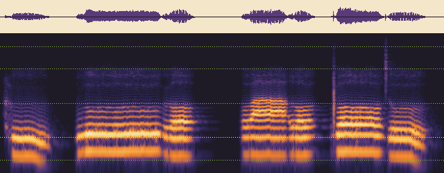
Babble: June voice_june
Conspiratorial: half-whispered, close, quick little bursts and a giggle.
In the game: Non-verbal babble under the caption when the character speaks (D20, D23.1). Each take is a different line.
Listen for: Does it sound like this character? Cute and kind, never creepy or robotic? Too buzzy?
Takes: 1 2 3 Play all
2.49–2.69 s -19.0 to -19.0 LUFS (target -19) peak ≤ -1.4 dBTP voice limiter up to 0.9 dB all checks passed
Spectrogram (take 1) 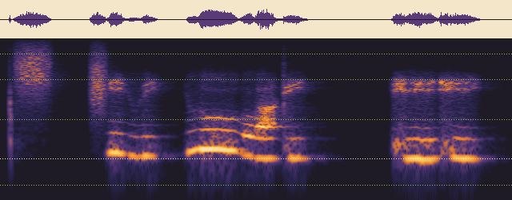
Babble: Aunt Kit voice_kit
Theatrical: wide swoops, warm vibrato, generous vowels.
In the game: Non-verbal babble under the caption when the character speaks (D20, D23.1). Each take is a different line.
Listen for: Does it sound like this character? Cute and kind, never creepy or robotic? Too buzzy?
Takes: 1 2 3 Play all
3.71–4.04 s -19.0 to -19.0 LUFS (target -19) peak ≤ -3.3 dBTP voice all checks passed
Spectrogram (take 1) 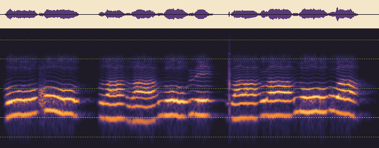
Ambience and music
Night ambience loop amb_night
A gentle autumn night: soft gusts of wind, leaves skittering, two far-off crickets. Stereo, 24 s, loops seamlessly.
In the game: Bed under the street (spec §6: ambient life that never competes with evidence).
Listen for: Calm, not spooky-scary? Is the loop point audible? Are the crickets too sharp?
Takes: 1 2 3 Play all
24.00 s -28.0 to -28.0 LUFS (target -28) peak ≤ -11.4 dBTP ambience all checks passed
Spectrogram (take 1) 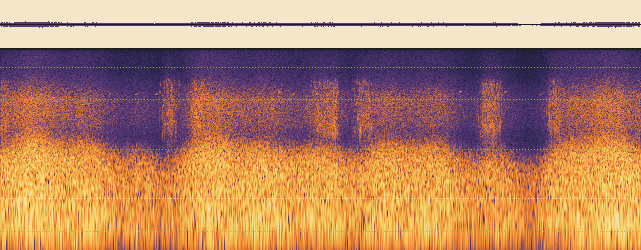
Motif: plucked (opening) music_motif_pluck
The three-note motif in the knock rhythm (short, short, long) on a soft plucked string.
In the game: Opening music seed (spec §6: sparse plucked strings).
Listen for: Gentle and curious? Does the string sound like a real instrument?
Takes: 1 2 3 Play all
3.78–3.84 s -20.0 to -20.0 LUFS (target -20) peak ≤ -3.8 dBTP music all checks passed
Spectrogram (take 1) 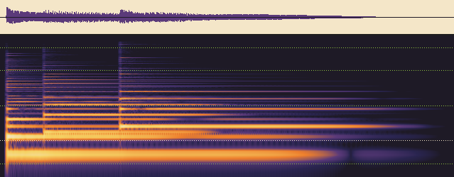
Motif: wood with a warm chord (closure) music_motif_wood
The same motif on a wooden marimba, then a warmer rolled D major chord.
In the game: Case closure (spec §6: the motif on wood with a warmer final chord).
Listen for: Does the final chord feel warm and 'case solved'?
Takes: 1 2 3 Play all
4.98–5.12 s -20.0 to -20.0 LUFS (target -20) peak ≤ -6.3 dBTP music all checks passed
Spectrogram (take 1) 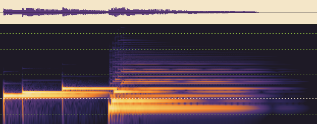